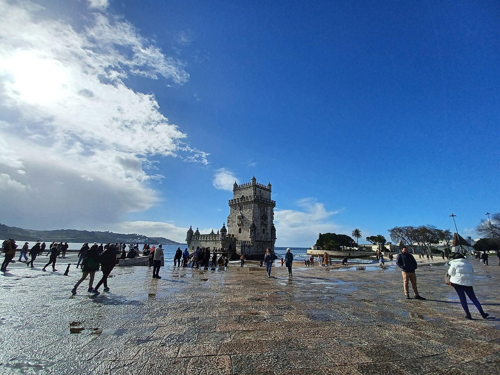
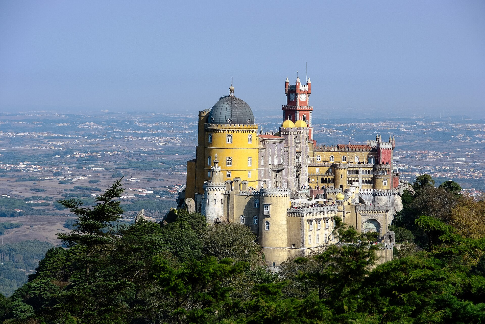
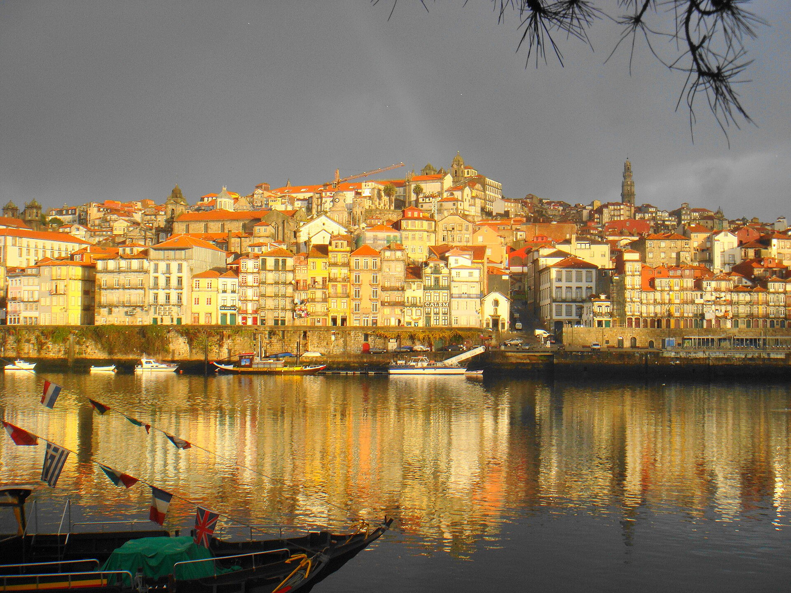
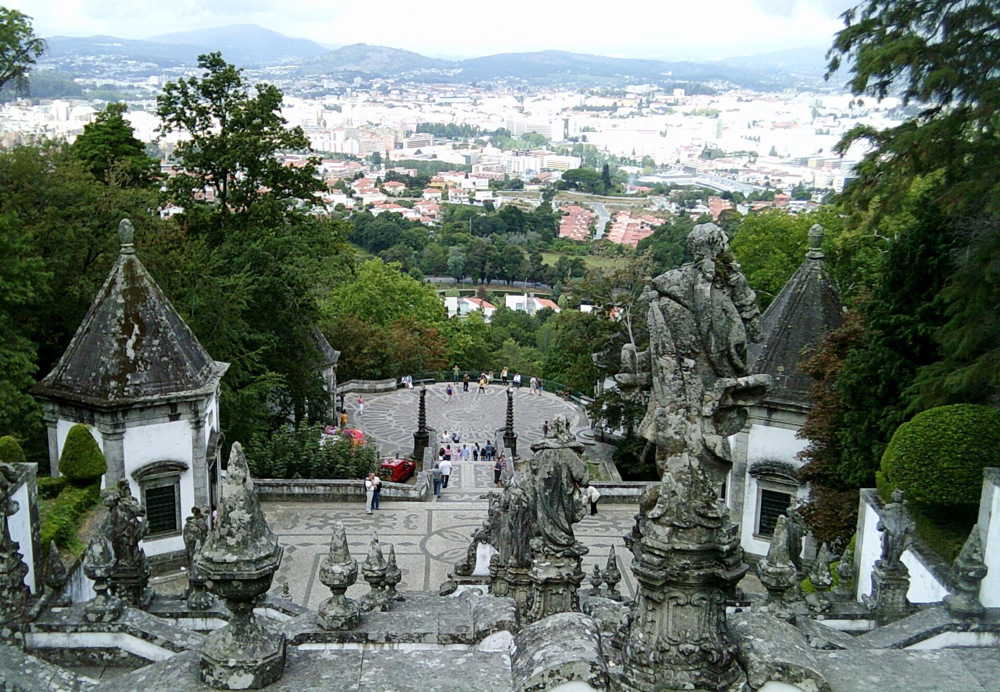
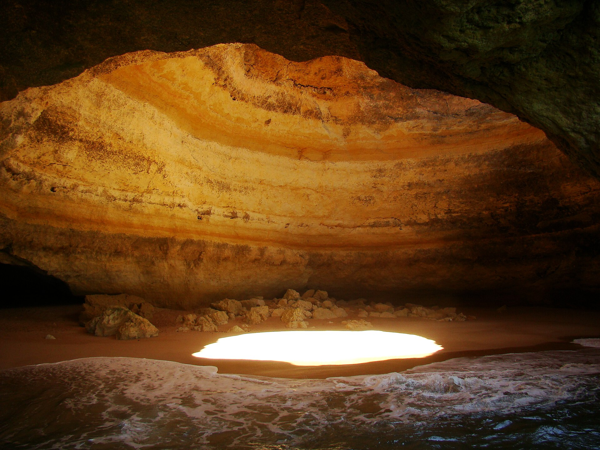
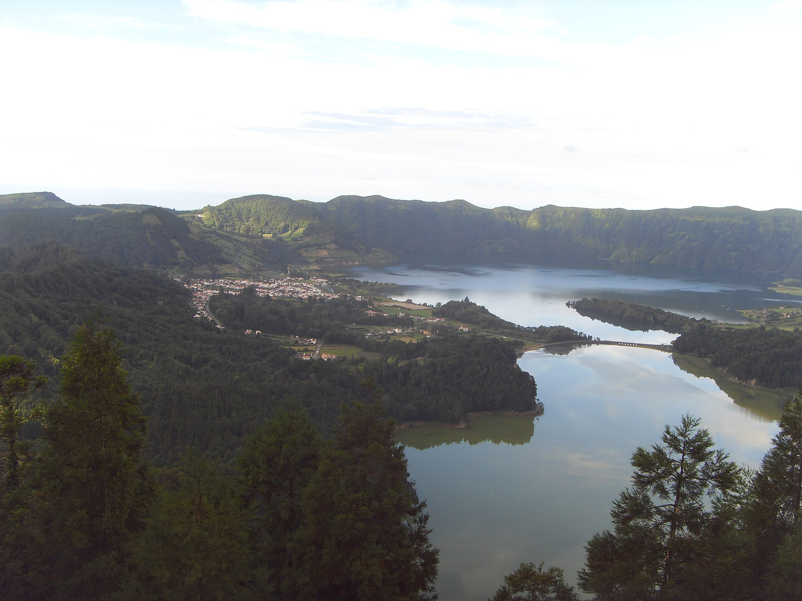

Portugal — Pontos Turísticos

🏰 Torre de Belém — Lisboa
Símbolo da Era dos Descobrimentos! Beleza à beira do rio Tejo.

🌈 Palácio da Pena — Sintra
Cores vibrantes no topo da serra! Parece um castelo de conto de fadas.

🏙️ Ribeira — Porto
Casas coloridas à beira do rio Douro! Vinhos, pontes e tradição.

⛪ Bom Jesus do Monte — Braga
Escadaria monumental com vista panorâmica! Fé e beleza natural.

🏖️ Grutas de Benagil — Algarve
Águas claras e falésias douradas! Uma das praias mais bonitas da Europa.

🌋 Lagoa das Sete Cidades — Açores
Duas lagoas, uma azul e outra verde! Paraíso vulcânico.
← Voltar para a página de Portugal
Créditos das fotografias
As seis fotografias são exibidas com recorte visual para preencher os cartões (CSS: object-fit: cover). Os arquivos locais não foram editados nesta atualização.
- Torre de Belém — Lisboa — “Torre de Belém, Lisbon 01.jpg”, de Simon Burchell. Original no Wikimedia Commons. Licença: CC BY-SA 4.0.
- Palácio da Pena — Sintra — “Pena Palace Sintra.jpg”. © Sergey Pesterev / Wikimedia Commons. Original no Wikimedia Commons. Licença: CC BY-SA 4.0.
- Ribeira — Porto — “Ribeira do porto.jpg”, de Gustavo Motta. Original no Wikimedia Commons. Licença: CC BY-SA 3.0.
- Bom Jesus do Monte — Braga — “Braga bom jesus monte escadaria (2).JPG”, de Carlos Luis M C da Cruz. Original no Wikimedia Commons. Dedicação ao domínio público: CC0 1.0 (crédito voluntário).
- Grutas de Benagil — Algarve — “A Catedral de Benagil.JPG”, de Evarusso. Original no Wikimedia Commons. Licença: CC BY-SA 3.0.
- Lagoa das Sete Cidades — Açores — “Lagoa das Sete Cidades - panoramio.jpg”, de Luís Rochinha. Original no Wikimedia Commons. Licença: CC BY 3.0.


.JPG){kind=link}